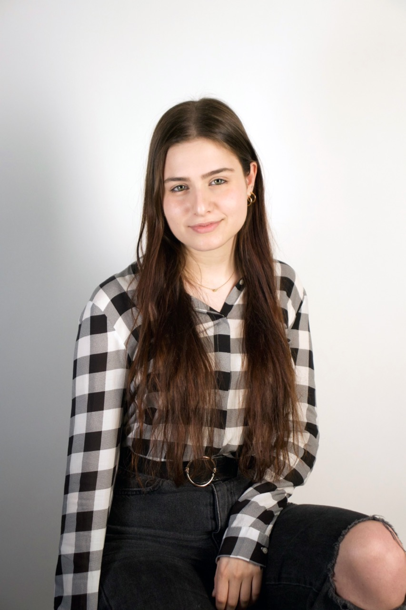
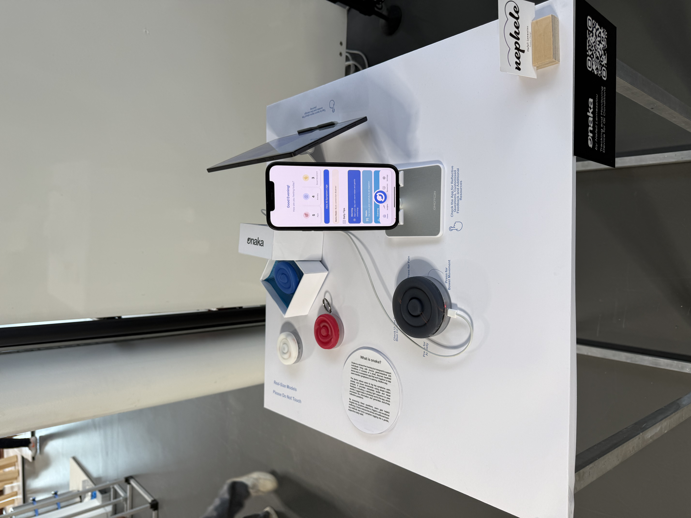
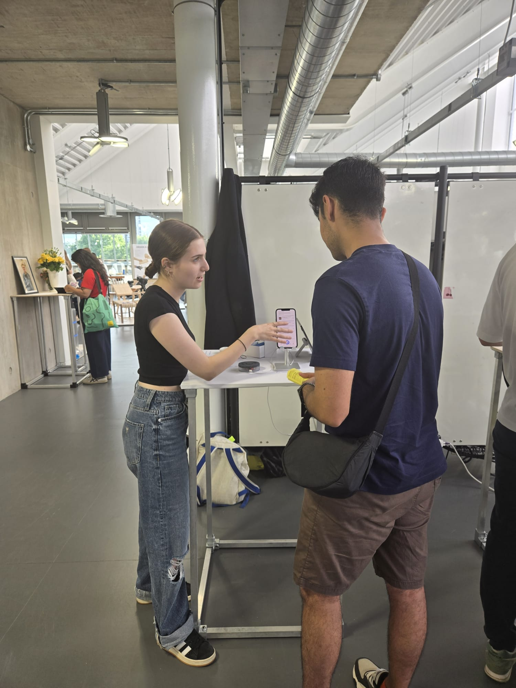
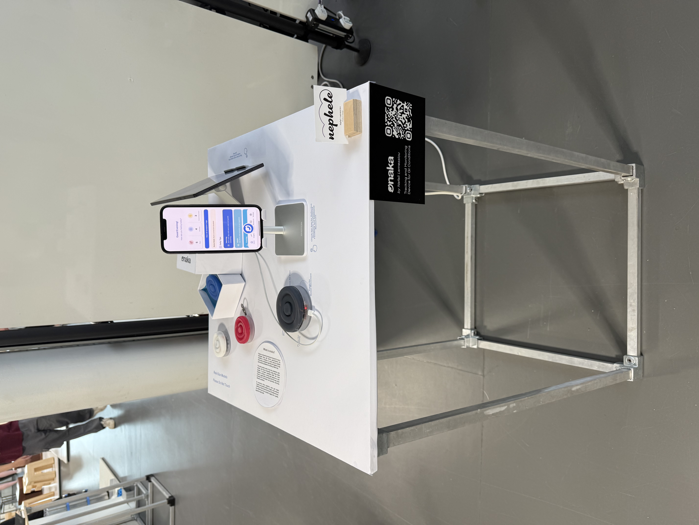
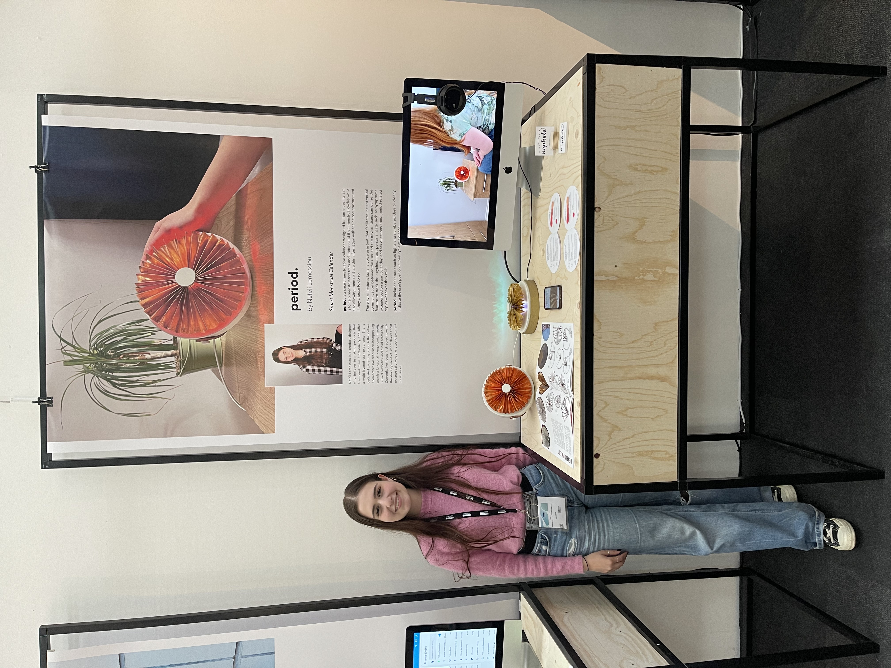
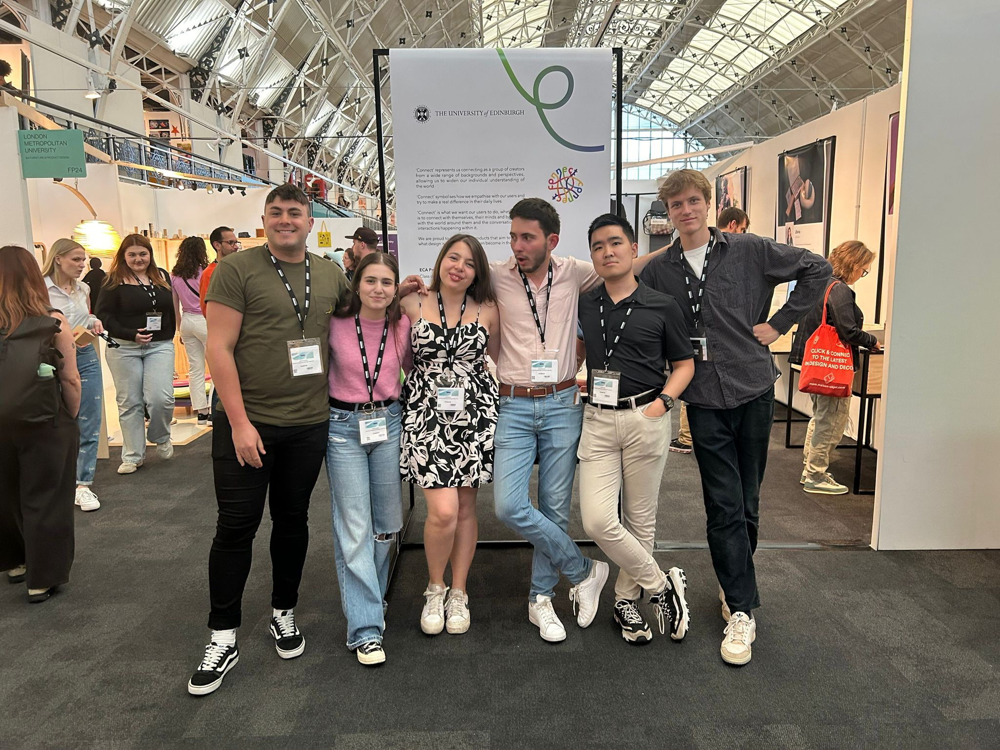
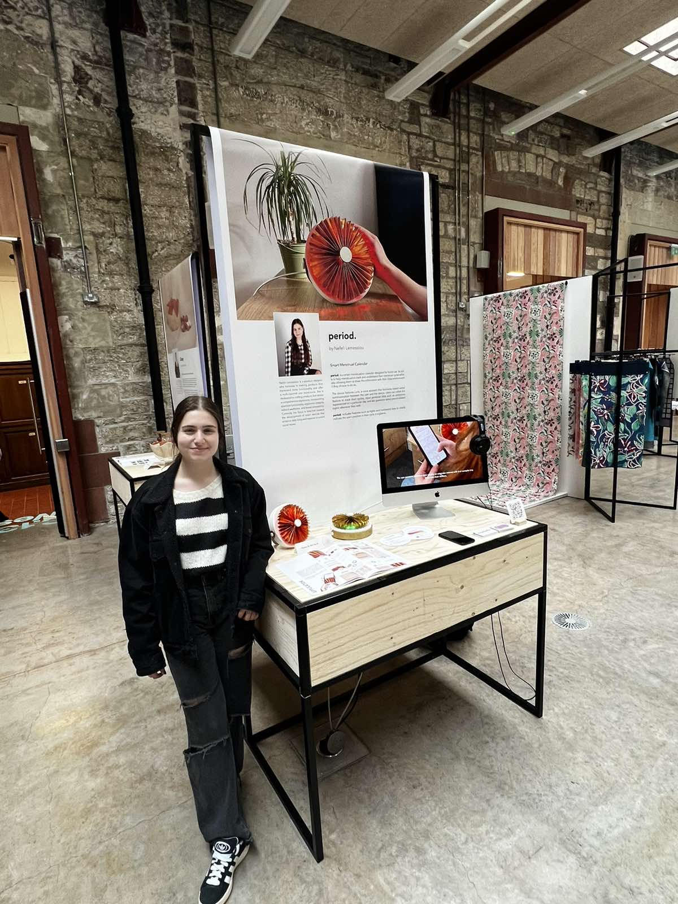
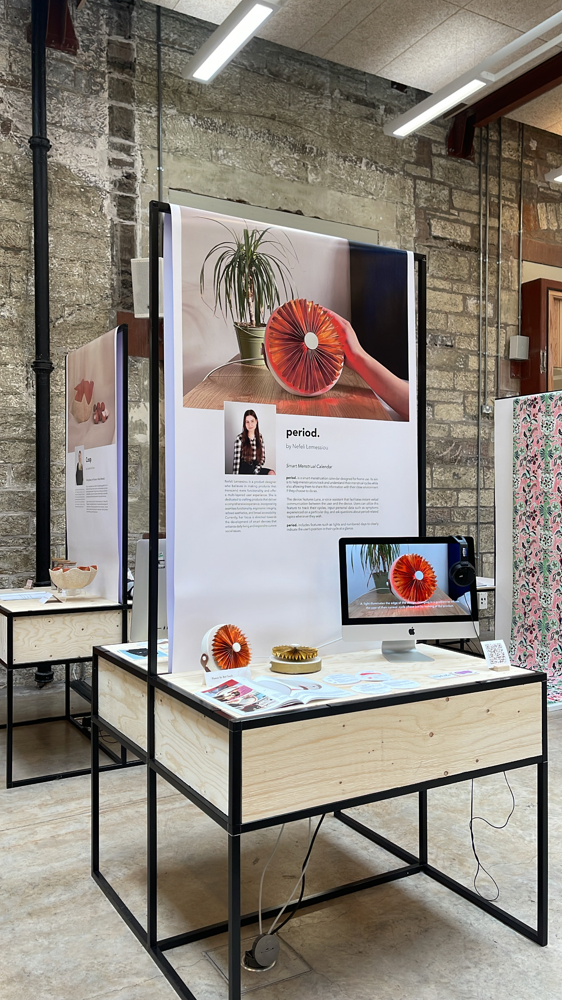
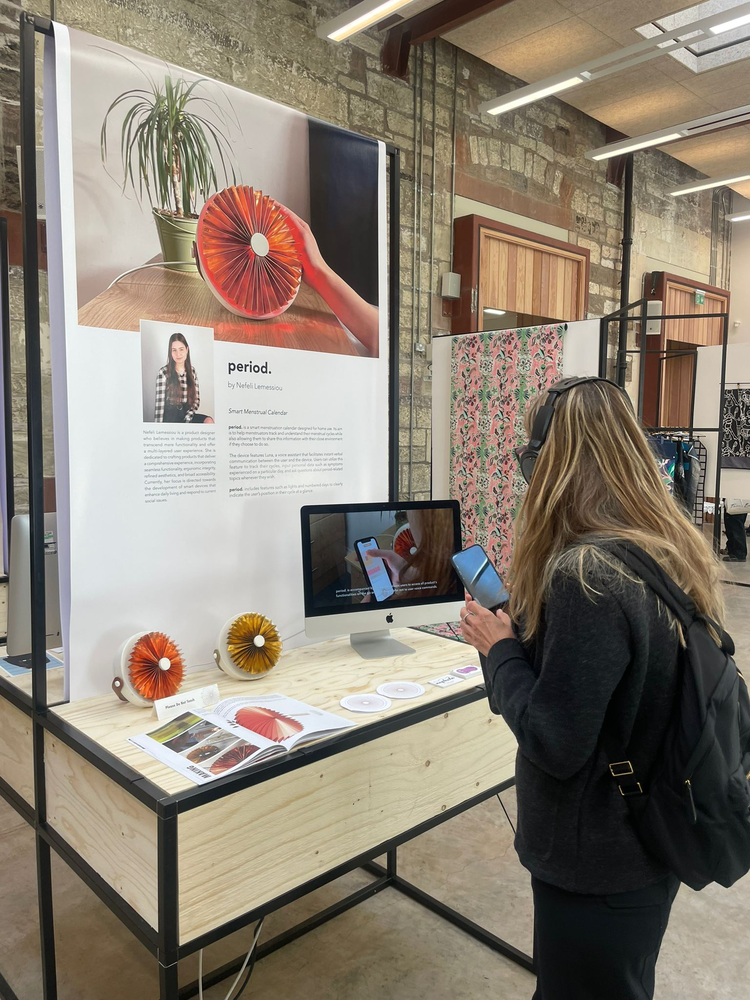
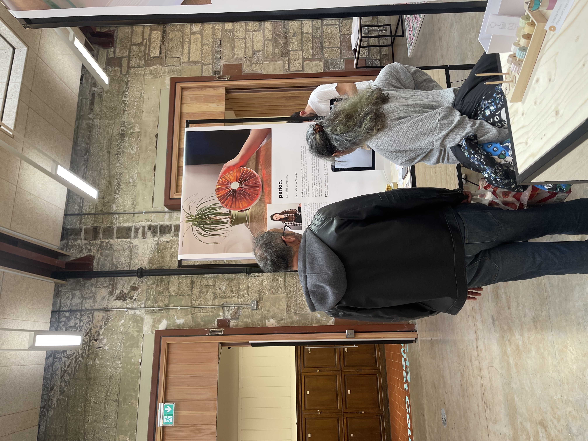

Industrial designer based in London. I work between hardware and interface, on products that take care of the people using them

Hi, I'm Nefeli. A designer trained in industrial design, who found her way into interfaces and now works at the intersection.
I grew up in Cyprus, studied product design at the University of Edinburgh, and moved to London in 2024 for my MA at the Royal College of Art. My practice has settled close to consumer electronics, physical products, often with a companion interface that does the part the object can't. I'm comfortable working in either on its own, but the place I keep coming back to is where the two meet.
The briefs I'm drawn to take seriously something people already live with, fatigue, anxiety, illness, the small frictions of a day. I've spent a lot of time in mental and physical health spaces because they're full of objects and interfaces that could be better, but the real interest is wider, products that make the difficult parts of a day easier, and the ordinary parts feel considered.
What I try to design is effortlessness. Whether the touchpoint is a button, a screen, or how a thing sits on a bedside table, I want it to feel like it belongs there, without asking much of the person on the other side. I'd rather make something that matters than something clever.
I'm currently looking for a product, UX or industrial design role in London, where I can keep learning and growing. I'd be glad to talk whether that means hardware, interfaces, or both.
One-year intensive masters focused on human-centred product design. My final project, Onaka, paired a wearable bowel-tracking device with a companion app for people living with chronic gastrointestinal conditions. Coursework spanned material futures, design ethics, design for health, and digital product practice across Figma, prototyping, and IoT.
Four-year honours degree covering industrial design, design research, materials, manufacturing, and human factors. My final-year project period., a tangible, voice-activated cycle tracker, was displayed in the ECA Grad Show and exhibited at New Designers 2024. Built a strong grounding in 3D modelling, hand prototyping, and design research.
A Levels with A* in Art & Design and Mathematics. Graduated with the Apolytirion Diploma at 98%, alongside a BTEC Foundation Diploma in Art & Design with Distinction. My first formal training in design thinking and visual practice.
Exhibited Onaka in the Digital & Interactive Design section. Designed and curated my plinth, featuring two working prototypes, colour and material explorations, a live app demo, and supporting project material.



Showcased period. at the UK's leading graduate design exhibition. Contributed to curating our group's exhibition space, including layout and visual materials.


Co-curated the Product Design graduation exhibition. Exhibited period. with two prototypes and a working app, and served as graphic designer for the show — producing the booklet, posters, and signage.



